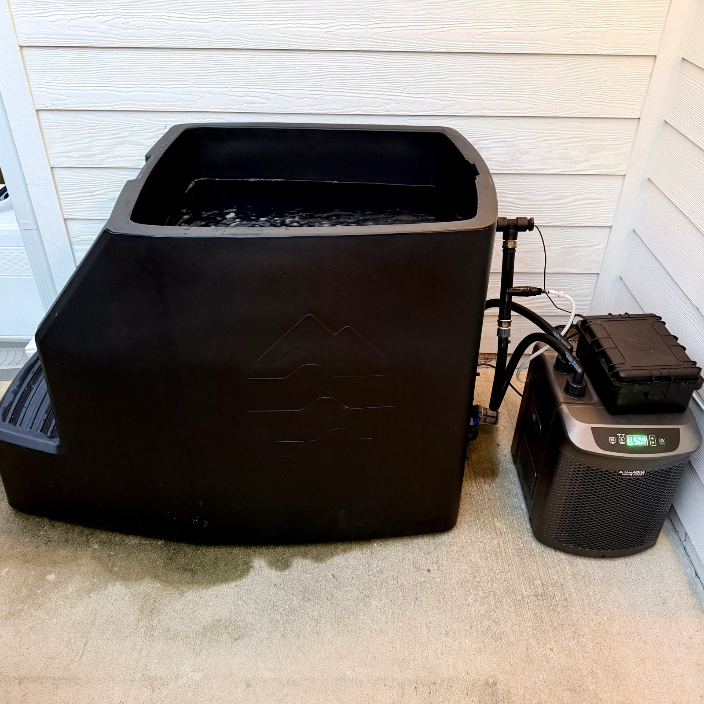
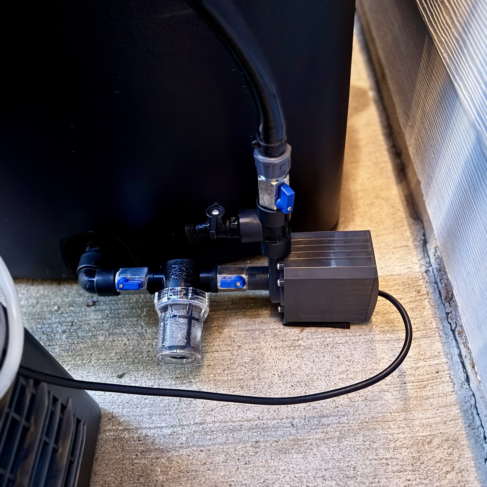
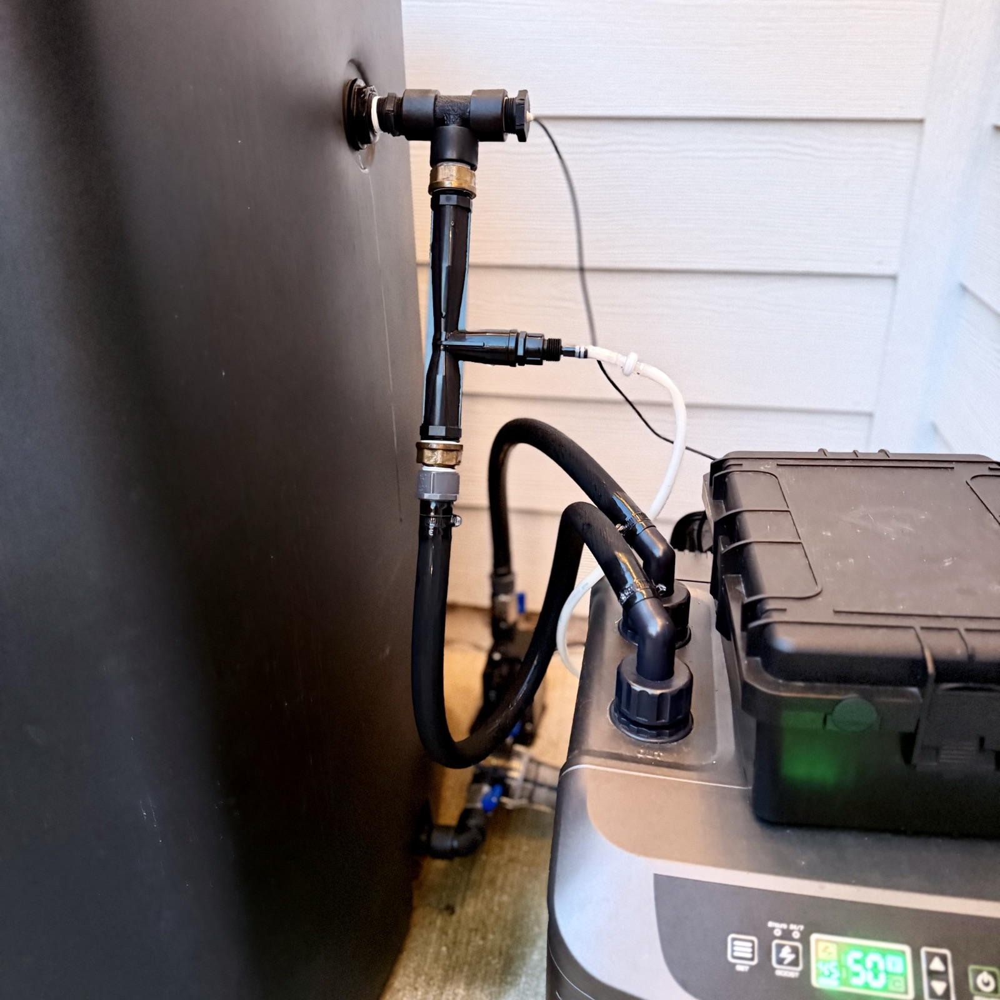
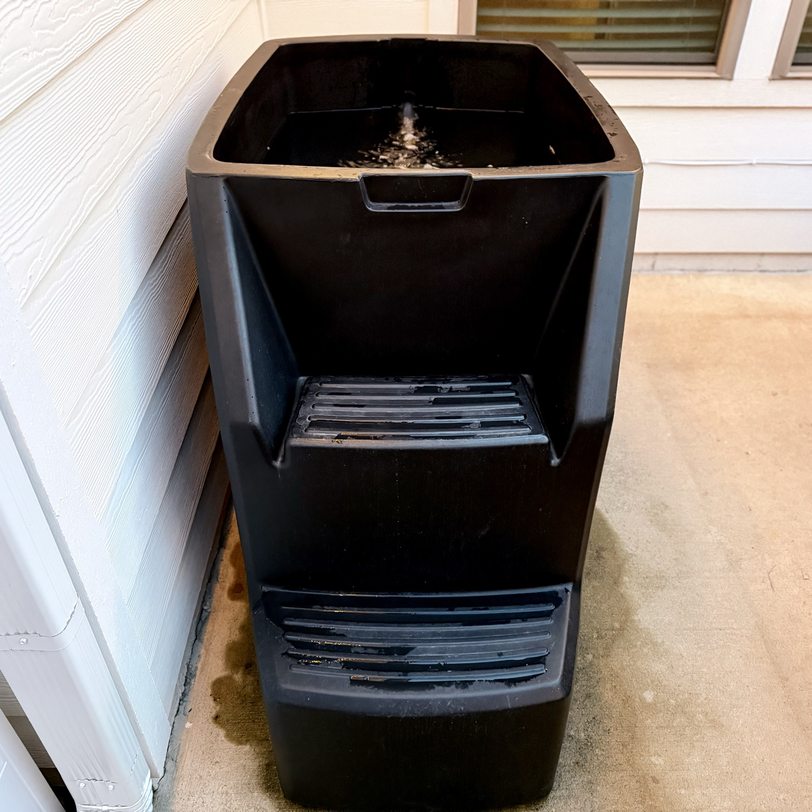
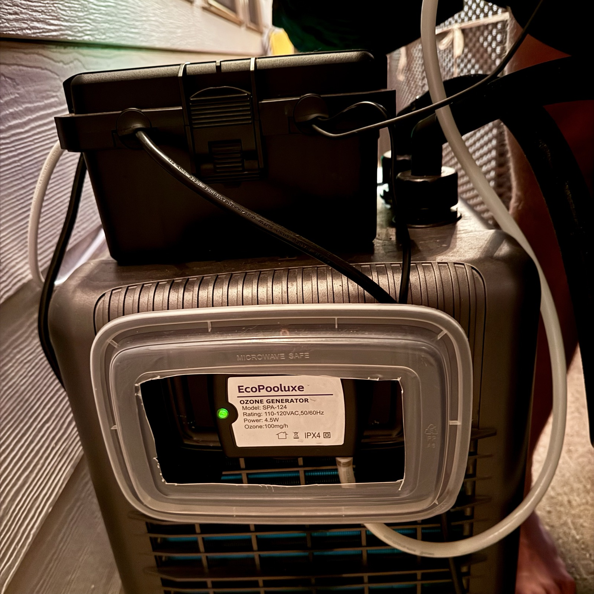
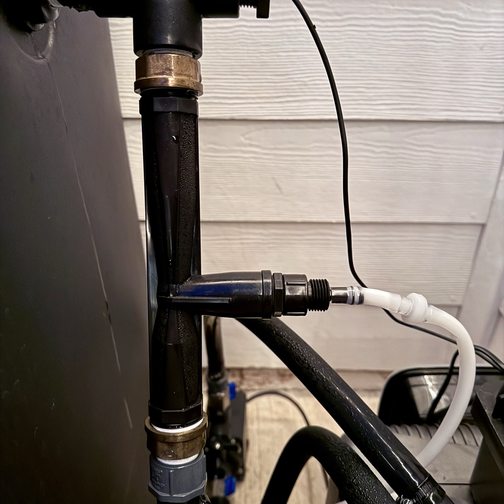
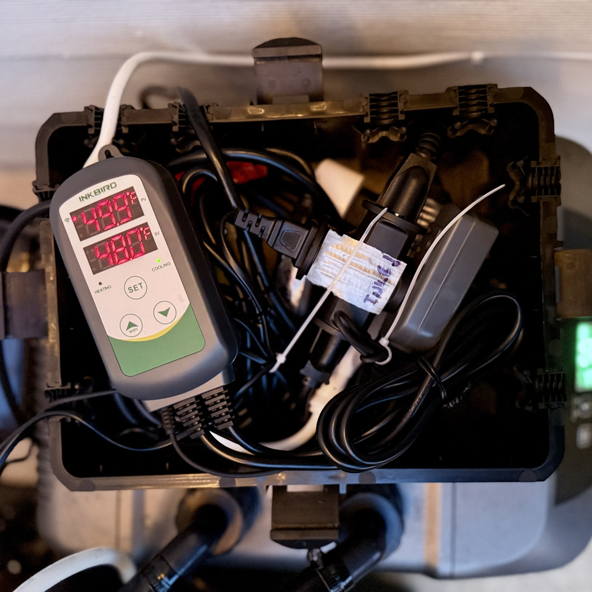
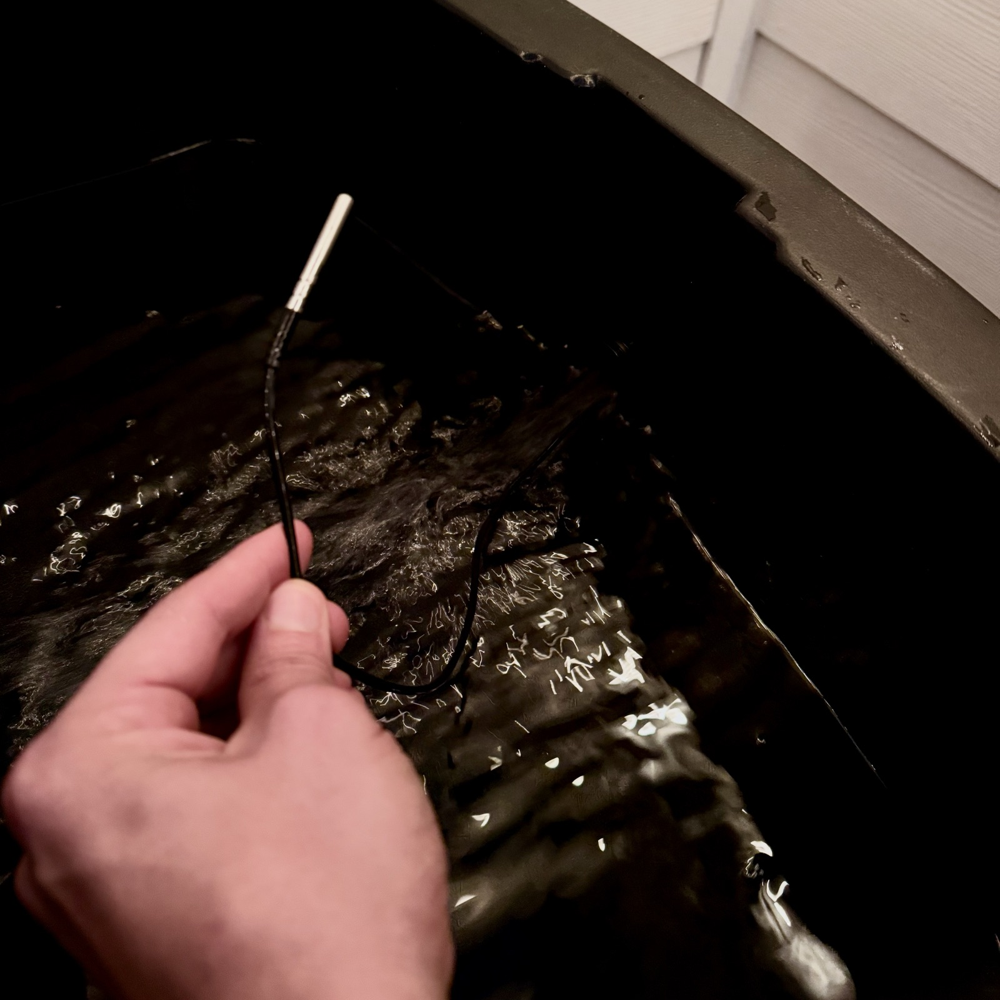
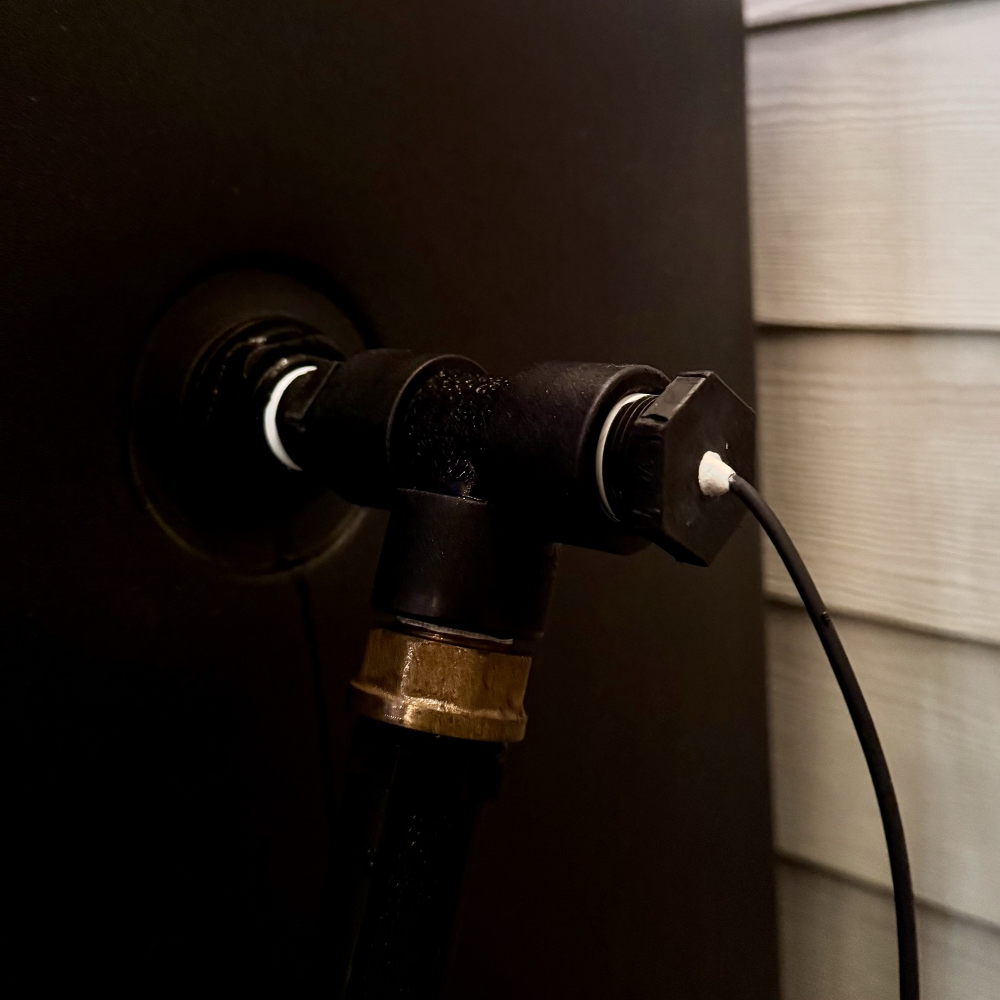

How I built a self-chilling, self-cleaning cold plunge with off-the-shelf parts —
a tub, a ½ HP water chiller, and a pump. Plus the optional upgrades I added: ozone sanitation
and automated temperature control.
All-in: roughly
$2,900. The tub ($1,750) and chiller ($859) are most of it — the pump and plumbing round
it out, and the optional upgrades add about $200 more.

How it works
The system is a simple loop: a pump pulls water from the tub's bottom drain, pushes it through
a strainer into a water chiller, and the chilled water returns to the top of the tub. That's it —
tub, pump, chiller, and some ¾" poly fittings to connect them.
Everything else is optional. I added an ozone generator (fed through a venturi injector on the
return line) to keep the water sanitized, and an Inkbird temperature controller that switches the
pump and chiller on only when the water warms above my set point.
Supplies list
Disclosure: some links below are Amazon affiliate links — I earn a small
commission at no extra cost to you if you buy through them.
💳 This can be HSA/FSA eligible
Cold plunge gear can qualify as an HSA/FSA expense — you just need a
Letter of Medical Necessity (LMN), which your doctor should be able to provide.
Some sellers make it even easier: Ice Barrel will provide an LMN for free. Worth checking before
you pay out of pocket.
The tub I went with — built-in steps, and it comes with a drain spigot (reused on the
pump discharge tee). Ice Barrel also provides a free LMN for HSA/FSA purchases.
The workhorse — my ½ HP drops the tub 2–3°F in about an hour. If your plunge sits inside
or fully shaded (I'm in Arkansas), you could save money with the
¼ HP version — it'll just run
a little longer.
Inline right before the pump — catches debris before it hits the pump and chiller.
Sandwich it between two ball valves so you can pop it out and clean it while the tub is full.
One on each side of the mesh strainer (so you can clean it while the tub is full), and one
above the tee on the pump discharge (close it and the pump pushes water out the spigot to
drain the tub). These work, but I'd actually recommend a
full-port ball valve
instead so you're not restricting flow to the pump (no affiliate link — listing has a high
return rate, so buyer beware either way).
Ozone is what keeps my water clean for weeks instead of days. The generator
makes ozone gas, and the venturi injector mixes it into the return line — water rushing through
the venturi's narrowed throat creates suction that pulls the ozone in automatically, no air pump
needed. It oxidizes bacteria, sweat, and organic gunk, then breaks back down into oxygen — no
chemical smell, nothing left behind in the water.
Part swap: if you go this route, skip the ¾" barbed ×
NPT male adapter and the Banjo 90° street elbow from the required list above — the
venturi assembly below replaces them on the return line.
Steps the ¾" line up to the 1" venturi and back down.
Optional Temperature automation with Inkbird
Without automation you leave the pump and chiller running 24/7 — that
works, it just burns more electricity. The Inkbird fixes that: its probe sits in the tub water,
and when the temp rises above your set point, it powers an outlet that the pump and chiller share
(via the splitter). The loop kicks on, chills the water back down, and everything shuts off. The
WiFi version also means you can check your water temp from your phone before you walk outside.
Seals the drilled plug where the temp probe passes into the tub (see upgrades below).
Optional Maintenance supplies
Cold water already slows bacteria way down, and ozone handles the rest
day-to-day — these supplies cover the gaps. Hydrogen peroxide is the sanitizer dose between water
changes (it oxidizes organics, then breaks down into water and oxygen), the stabilizer keeps that
peroxide active longer so you dose less often, and the hose filter cleans up your fill water so
you start each refill ahead of the game.
Attaches to your garden hose when filling the tub — same filters RVers use. Cleaner fill
water = less sanitizer work later.
Assembly guide
No special tools needed beyond a drill (only if you do the temp-probe pass-through), an
adjustable wrench, and teflon tape. Wrap every threaded connection with tape before assembly.
Place the tub and chiller
Set the tub on level ground near a GFCI outdoor outlet, with room beside it for the chiller.
Leave clearance around the chiller's vents — it needs airflow to dump heat.
Plumb the suction side: tub drain → strainer → pump
The Banjo short nipple (NIP075-SH) threads through the tub's bulkhead — one goes here at
the bottom drain, and the second goes in the upper return inlet for later. From the nipple:
90° elbow → ball valve → mesh strainer → ball valve → pump intake. With a valve on
both sides of the strainer, you can close them and clean the screen without draining
the tub. Use barbed adapters + hose clamps on every poly pipe connection, teflon tape on
every thread.
💡 Click any part in the diagram to view the product.

Plumb the discharge: pump → tee with drain spigot → valve → chiller inlet
Off the pump discharge, install a tee with the drain spigot (the one that came with the tub)
on the branch, then a third ball valve above the tee before the line continues to the chiller.
This is your drain setup for water changes: close that valve, open the spigot, and the pump
pushes the old water out the spigot instead of through the chiller. Tub empties itself.
💡 Click any part in the diagram to view the product.
Return line: chiller outlet → back into the tub
From the chiller outlet, run pipe up to the tub's upper return inlet (the second Banjo
short nipple goes through this bulkhead). The parts differ depending on whether you're
running the venturi:
Without venturi (simplest)
💡 Click any part in the diagram to view the product.
With venturi (for ozone)
💡 Click any part in the diagram to view the product.

Fill, check for leaks, power up
Fill the tub, open all valves, and run the pump. Check every joint for drips and snug
anything that weeps. Then power the chiller, set your target temp, and give it several hours
for the initial pull-down.

Optional upgrades
None of these are required — the core loop above is a fully working cold plunge. These are the
quality-of-life additions I run.
Ozone sanitation (venturi injection)
The ozone generator sits next to the chiller and feeds ozone gas through tubing into the
venturi injector on the return line. Water rushing through the venturi creates suction that pulls
the ozone in and mixes it into the flow — no separate air pump needed.
Sizing note: I went with the 1" venturi (with ¾"→1" brass adapters) because
the ¾" venturi restricted flow too much. This is also why the pump needs to be 1200 GPH minimum —
the venturi eats a lot of head pressure.
My high-tech rain shield for the ozone generator: a plastic food container cut to fit. Free,
and it works.

Ozone generator + food-container rain shield

Venturi inline on the return, ozone line attached
Temperature automation (Inkbird ITC-308)
Without this, you leave the pump and chiller running 24/7 — totally fine, just uses more power.
With the Inkbird, the temp probe sits in the tub water, and when the water rises above the set
point, the controller powers the cooling outlet. The pump and chiller both plug into that outlet
via the 3-way splitter, so the whole loop kicks on together, chills back down to temp, and shuts off.
Everything lives in a weatherproof electronics box on top of the chiller.

Inkbird + splitter in the weatherproof box

Probe tip sits in the tub water
Temp probe pass-through (drill + J-B Weld)
The easy option: just run the probe wire over the rim and let it dangle into the water under
the lid — that works fine. I was worried about the lid slowly smashing the wire over time, so I
did it cleaner: I drilled a small hole through a threaded plug (the plug comes with the Ice
Barrel 500, same as the spigot), fed the probe wire through, sealed it with J-B Weld, and
threaded it into the return-line tee. Watertight, and no wire pinched under the lid.

Drilled plug + J-B Weld seal on the probe wire
Maintenance routine
Cold water + ozone + filtration does most of the work. Here's the routine on top of that:
Weekly
Hydrogen peroxide —
about 1–2 cups of generic 3% for the 77-gallon tub. It oxidizes sweat and organics, then breaks
down into water and oxygen.
Peroxide stabilizer —
dose per the label directions. Keeps the peroxide active longer so it works all week.
Clean the mesh strainer — close the valves on both sides of it, pop the
strainer open, rinse the screen. No need to drain the tub.
Monthly
Change out the water — close the valve above the discharge tee, open the
drain spigot, and let the pump empty the tub for you. Refill through the inline hose filter and
let the chiller pull it back down to temp.
Cold plunge protocol
Short and sweet, based on Andrew Huberman's guidance on deliberate cold exposure:
45–55°F
the recommended range — "uncomfortably cold but safe to stay in."
2.5–5 min
per session. I recommend the full 5 — 2.5 always feels too short.
11+ min
per week minimum. I usually land between 30–60 min doing 5-minute sessions.
Warm up naturally afterward — no hot shower. Letting your body reheat itself is part of the workout (and boosts the metabolic effect).
Mornings are great for the adrenaline/dopamine spike, but evenings work too — I plunge
before bed, just give yourself about an hour before you try to fall asleep.
Keep your hands balled up — moving them around breaks up the warm "thermal layer" and
chills you down fast.
Avoid plunging in the 4 hours after strength/hypertrophy training — it can blunt muscle adaptations. Before training or on off hours is fine.